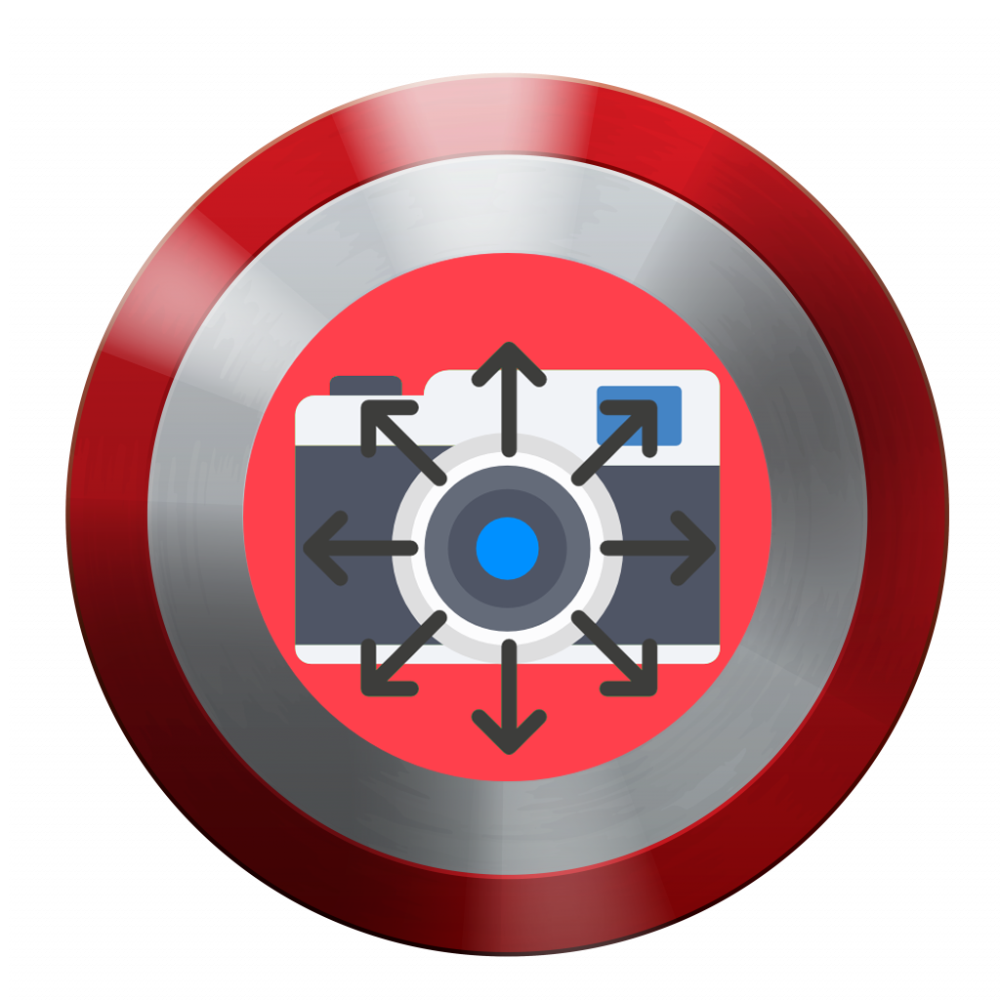

<div *ngIf="showSplash" class="splash">
    <!--<div class="texto titulo">Relevamiento Visual</div>-->
    <div class="spinner heartBeat"></div>
    <div class="texto nombre">Madou Rizzi</div>
</div>
<ion-fab vertical="center" horizontal="start" slot="fixed">
    <ion-fab-button color="danger">
        <ion-icon name="volume-mute"></ion-icon>
    </ion-fab-button>
</ion-fab>

<ion-app>
    <ion-router-outlet></ion-router-outlet>
</ion-app>

<div class="spinnerInterceptor heartBeat" *ngIf="showSpinner">
    
</div>